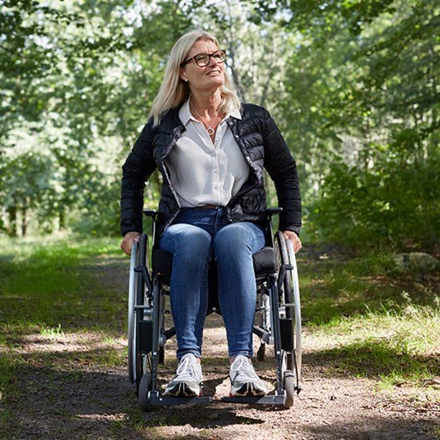

L'AVENIR DES CHAISES ROULANTES
Le fauteuil CAPESH a été désigné, pensé et conçut afin de faciliter la vie des personnes en situation d’handicap. Ce projet est né de la réflexion suivante : « Pourquoi adapter les infrastructures quand on peut accompagner leurs utilisateurs jusqu’à ce qu’ils puissent se déplacer aussi facilement que le reste de la population. »